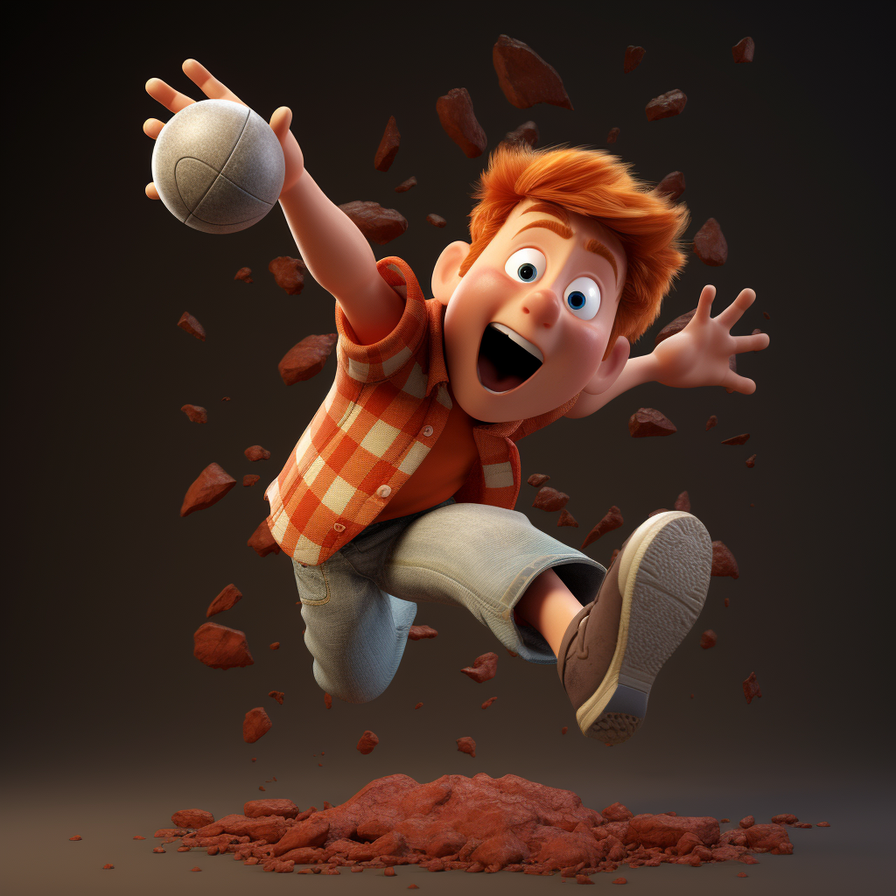

In principle, applying variational autoencoders (VAEs) to sequential data offers a method for controlled sequence generation, manipulation, and structured representation learning. However, training sequence VAEs is challenging: autoregressive decoders can often explain the data without utilizing the latent space, known as posterior collapse. To mitigate this, state-of-the-art models weaken the powerful decoder by applying uniformly random dropout to the decoder input. We show theoretically that this removes pointwise mutual information provided by the decoder input, which is compensated for by utilizing the latent space. We then propose an adversarial training strategy to achieve information-based stochastic dropout. Compared to uniform dropout on standard text benchmark datasets, our targeted approach increases both sequence modeling performance and the information captured in the latent space.